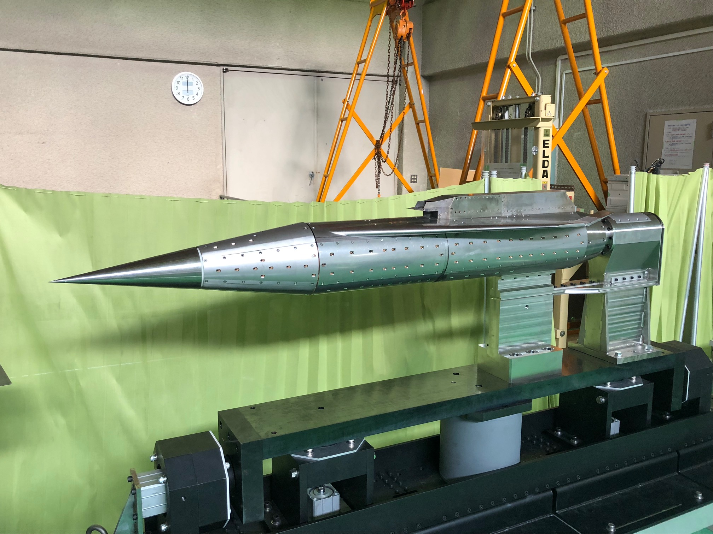
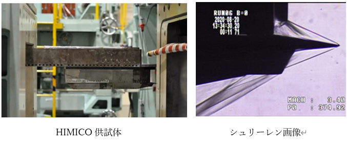
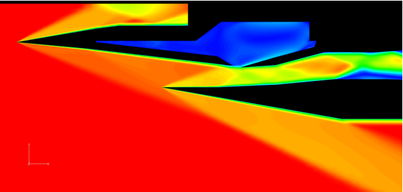

- HIMICO計画
- 極超音速飛行環境下での機体とエンジンの統合制御技術の実証
- 短期間かつ低コストに再現できる極超音速飛行実験の確立
- 空気取込口(エアインテーク)
- CFDによる詳細解析
JAXAや他大学と共同で極超音速旅客機の実用化に向けてHIMICO(High Mach Integrated Control Experiment,極超音速統合制御実験)計画が進められています。HIMICO計画とは運用方法が確立されているS-520観測ロケットにHIMICO実験機を搭載してJAXA 内之浦宇空間観測所より打ち上げる飛行実験です。主な目的は以下の２つです。
佐藤研究室では実験機に搭載されるラムジェットエンジンについて研究しています。

極超音速統合制御実験機
ラムジェットエンジンは圧縮機を持たず、エアインテークで流入する空気の運動量を衝撃波により、圧力に変換しています。エアインエークの性能はエンジンに流入する空気流に 影響し、エンジン全体の性能に関わるため、詳細な調査が必要です。 JAXA 相模原キャン パスの超音速風洞や JAXA 調布キャンパスの極超音速風洞を用いて風洞試験を行い、エンジンの性能取得、衝撃波の撮影（シュリーレン）、バズ特性やオイルフローを用いた流れ場の調査を行っています。

JAXAが開発した高速流体ソルバ「FaSTAR」を用いて、実験では見ることのできないエアインテーク内部の流れ場やバズ特性に関して数値解析を行っています。

HIMICOの数値解析結果 （Mach数分布）